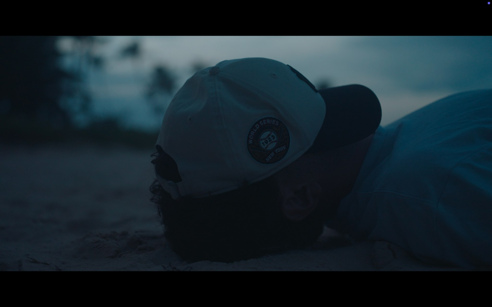

DOCUMENTARYDrake’s
Drake’s
Fortune
A journey through the Caribbean and Panama, following the story of Francis Drake and the mystery of his final resting place.
- Filmmaker
- Henri de Canecaude
- Format
- Adventure documentary
